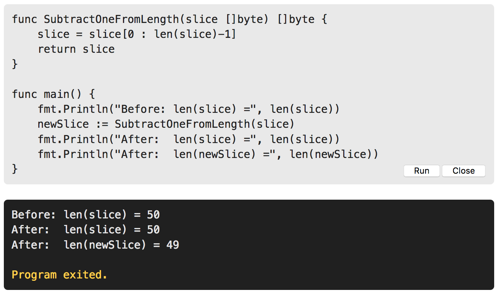

Arguments are passed by value, so the function receives a copy of each argument; modifications to the copy do not affect the caller. However, if the argument contains some kind of reference, like a pointer, slice, map, function, or channel, then the caller may be affected by any modifications the function makes to variables indirectly referenced to by the argument
The golang.org/x/... repositories hold packages designed and maintained by the Go team for applications such as networking, internationalized text processing, mobile platforms, image manipulation, cryptography, and developer tools. These packages are not in the standard library because they're still under development or because they're rarely needed by the majority of Go programmers
// ch5/findlinks1
// findlinks1 prints the links in an HTML document read from standard input.
package main
import (
"fmt"
"os"
"golang.org/x/net/html"
)
func main() {
doc, err := html.Parse(os.Stdin)
if err != nil {
fmt.Fprintf(os.Stderr, "findlinks1: %v\n", err)
os.Exit(1)
}
for _, link := range visit(nil, doc) {
fmt.Println(link)
}
}
// visit appends to links each link found in n and returns the result
func visit(links []string, n *html.Node) []string {
if n.Type == html.ElementNode && n.Data == "a" {
for _, a := range n.Attr {
if a.Key == "href" {
links = append(links, a.Val)
}
}
}
for c := n.FirstChild; c != nil; c = c.NextSibling {
links = visit(links, c)
}
return links
}// ch5/outline
package main
import (
"fmt"
"os"
"golang.org/x/net/html"
)
func main() {
doc, err := html.Parse(os.Stdin)
if err != nil {
fmt.Fprintf(os.Stderr, "outline: %v\n", err)
os.Exit(1)
}
outline(nil, doc)
}
func outline(stack []string, n *html.Node) {
if n.Type == html.ElementNode {
stack = append(stack, n.Data) // push tag
fmt.Println(stack)
}
for c := n.FirstChild; c != nil; c = c.NextSibling {
outline(stack, c)
}
}Note one subtlety: although outline "pushes" an element on stack, there is no corresponding pop. When outline calls itself recursively, the callee receives a copy of stack. Although the callee may append elements to this slice, modifying its underlying array and perhaps even allocating a new array, it doesn't modify the initial elements that are visible to the caller, so when the function returns, the caller's stack is as it was before the call
type SliceHeader struct {
Data uintptr
Len int
Cap int
}Even though the slice header is passed by value, the header includes a pointer to elements of an array, so both the original slice header and the copy of the header passed to the function describe the same array. Therefore, when the function returns, the modified elements can be seen through the original slice variable.
Here we see that the contents of a slice argument can be modified by a function, but its header cannot. The length stored in theslicevariable is not modified by the call to the function, since the function is passed a copy of the slice header, not the original. Thus if we want to write a function that modifies the header, we must return it as a result parameter, just as we have done here. Theslicevariable is unchanged but the returned value has the new length, which is then stored innewSlice.
// ch5/findlinks2
package main
import (
"fmt"
"net/http"
"os"
"golang.org/x/net/html"
)
func main() {
for _, url := range os.Args[1:] {
links, err := findLinks(url)
if err != nil {
fmt.Fprintf(os.Stderr, "findlinks2: %v\n", err)
continue
}
for _, link := range links {
fmt.Println(link)
}
}
}
// findLinks performs an HTTP GET request for url, parses the response
// as HTML, and extracts and returns the links
func findLinks(url string) ([]string, error) {
resp, err := http.Get(url)
if err != nil {
return nil, err
}
if resp.StatusCode != http.StatusOK {
resp.Body.Close() // v important
return nil, fmt.Errorf("getting %s: %s", url, resp.Status)
}
doc, err := html.Parse(resp.Body)
resp.Body.Close() // also v important
if err != nil {
return nil, fmt.Errorf("parsing %s as HTML: %v", url, err)
}
return visit(nil, doc), nil
}
// visit appends to links each link found in n and returns the result
func visit(links []string, n *html.Node) []string {
if n.Type == html.ElementNode && n.Data == "a" {
for _, a := range n.Attr {
if a.Key == "href" {
links = append(links, a.Val)
}
}
}
for c := n.FirstChild; c != nil; c = c.NextSibling {
links = visit(links, c)
}
return links
}
We must ensure that resp.Body is closed so that network
resources are properly released even in case of error.
Go's garbage collector recycles unused memory, but do
not assume it will release unused operating system
resources like open files and network connections. They
should be closed explicitly.
Go's approach [to error handling] set it apart from many other languages in which failures are reported using exceptions, not ordinary values. Although Go does have an exception mechanism of sorts, as we will see in Section 5.9, it is used only for reporting truly unexpected errors that indicate a bug, not the routine errors that a robust program should be built to expect
resp, err := http.Get(url)
if err != nil {
return nil, err
}
doc, err := html.Parse(resp.Body)
resp.Body.Close()
if err != nil {
// if we propagated the parse error directly, we'd lose information
// about what URL it was trying to parse when it failed, so we construct
// a new error with that information and stick the parse err at the end
return nil, fmt.Errorf("parsing %s as HTML: %v", url, err)
}// ch5/wait
package main
import (
"fmt"
"log"
"net/http"
"os"
"time"
)
// WaitForServer attempts to contact the server of a URL.
// It tries for one minute using exponential back-off.
// It reports an error if all attempts fail.
func WaitForServer(url string) error {
const timeout = 1 * time.Minute
deadline := time.Now().Add(timeout)
for tries := 0; time.Now().Before(deadline); tries++ {
_, err := http.Head(url)
if err == nil {
return nil // success
}
log.Printf("server not responding (%s); retrying...", err)
time.Sleep(time.Second << uint(tries)) // exponential back-off
}
return fmt.Errorf("server %s failed to respond after %s", url, timeout)
}generally reserved for the main package, library functions should usually propagate errors
func main() {
const url = "https://example.com"
if err := WaitForServer(url); err != nil {
fmt.Fprintf(os.Stderr, "Site is down: %v\n", err)
os.Exit(1)
}
// if err := WaitForServer(url); err != nil {
// log.Fatalf("Site is down: %v\n", err)
// }
}if err := Ping(); err != nil {
log.Printf("ping failed: %v; networking disabled", err)
}dir, err := ioutil.TempDir("", "scratch")
if err != nil {
return fmt.Errorf("failed to create temp dir: %v", err)
}
// ...use temp dir...
os.RemoveAll(dir) // ignore errors; %TMPDIR is cleaned periodicallyError handling in Go has a particular rhythm. After checking an error, failure is usually dealt with before success. If failure causes the function to return, the logic for success is not indented within an else block but follows at the outer level. Functions tend to exhibit a common structure, with a series of initial checks to reject errors, followed by the substance of the function at the end, minimally indented
Usually the variety of errors that a function may return is interesting to the end user by not to the intervening program logic. On occasion, however, a program must take different actions depending on the kind of error that has occurred.
in := bufio.NewReader(os.Stdin)
for {
r, _, err := in.ReadRune()
if err == io.EOF {
break // finished reading
}
if err != nil
return fmt.Errorf("read failed: %v", err)
}
// ...use r....
}Function values let us parameterize our functions over not just data, but behavior too.
package main
import (
"fmt"
"os"
"golang.org/x/net/html"
)
// forEachNode calls the functions pre(x) and post(x) for each node x in
// the tree rooted at n. Both functions are optional. pre is called
// before the children are visited (preorder) and post is called after
// (postorder)
func forEachNode(n *html.Node, pre, post func(n *html.Node)) {
if pre != nil {
pre(n)
}
for c := n.FirstChild; c != nil; c = c.NextSibling {
forEachNode(c, pre, post)
}
if post != nil {
post(n)
}
}
func makeNestFns(depth int) (start, end func(n *html.Node)) {
// note: unlike in some languages, function declarations only work
// at the topmost level, so we *must* use function expressions in
// function bodies. This is covered in section 5.6
// e.g. `func start(n *html.Node) { ... }` is a syntax error here
start = func(n *html.Node) {
if n.Type == html.ElementNode {
fmt.Printf("%*s<%s>\n", depth*2, "", n.Data)
depth++
}
}
end = func(n *html.Node) {
if n.Type == html.ElementNode {
depth--
fmt.Printf("%*s\n", depth*2, "", n.Data)
}
}
return start, end
}
func main() {
doc, err := html.Parse(os.Stdin)
if err != nil {
fmt.Fprintf(os.Stderr, "outline: %v\n", err)
os.Exit(1)
}
startElement, endElement := makeNestFns(2)
forEachNode(doc, startElement, endElement)
}Named functions can be declared only at the package level, but we can use a function literal to denote a function value within any expression.
More importantly, functions defined in this way have access to the entire lexical environment, so the inner function can refer to variables from the enclosing function, as this example shows:
// ch5/squares
package main
import "fmt"
// squares return a function that returns the next square number each
// time it is called
func squares() func() int {
var x int
return func() int {
x++
return x * x
}
}
func main() {
f1 := squares()
f2 := squares()
fmt.Println(f1()) // "1"
fmt.Println(f1()) // "4"
fmt.Println(f1()) // "9"
fmt.Println(f2()) // "1"
fmt.Println(f2()) // "4"
fmt.Println(f2()) // "9"
fmt.Println(f1()) // "16"
fmt.Println(f2()) // "16"
}As a somewhat academic example of anonymous functions, consider the problem of computing a sequence of computer science courses that satisfies the prerequisite requirements of each one. The prerequisites are given in the prereqs table below, which is a mapping from each course to the list of courses that must be completed before it.
package main
import (
"fmt"
"sort"
)
// prereqs maps computer science courses to their prerequisites.
var prereqs = map[string][]string{
"algorithms": {"data structures"},
"calculus": {"linear algebra"},
"compilers": {
"data structures",
"formal languages",
"computer organization",
},
"data structures": {"discrete math"},
"databases": {"data structures"},
"discrete math": {"intro to programming"},
"formal languages": {"discrete math"},
"networks": {"operating systems"},
"operating systems": {"data structures", "computer organization"},
"programming languages": {"data structures", "computer organization"},
}
func main() {
for i, course := range topoSort(prereqs) {
fmt.Printf("%d:\t%s\n", i+1, course)
}
}
func topoSort(m map[string][]string) []string {
var order []string
// this is how you approximate a Set in Go
seen := make(map[string]bool)
// necessary to declare visitAll before defining so it is available
// to be called recursively
var visitAll func(items []string)
visitAll = func(items []string) {
for _, item := range items {
if !seen[item] {
seen[item] = true
visitAll(m[item])
order = append(order, item)
}
}
}
var keys []string
for key := range m {
keys = append(keys, key)
}
// good to know about this package
sort.Strings(keys)
visitAll(keys)
return order
}Let's return to our findLinks example....
// Package links provides a link-extraction function.
package links
import (
"fmt"
"net/http"
"golang.org/x/net/html"
)
// Extract makes an HTTP GET request to the specified URL, parses the
// response as HTML, and returns the links in the HTML document
func Extract(url string) ([]string, error) {
resp, err := http.Get(url)
if err != nil {
return nil, err
}
if resp.StatusCode != http.StatusOK {
resp.Body.Close()
return nil, fmt.Errorf("getting %s: %s", url, resp.Status)
}
doc, err := html.Parse(resp.Body)
resp.Body.Close()
if err != nil {
return nil, fmt.Errorf("parsing %s as HTML: %v", url, err)
}
var links []string
visitNode := func(n *html.Node) {
if n.Type == html.ElementNode && n.Data == "a" {
for _, a := range n.Attr {
if a.Key != "href" {
continue
}
link, err := resp.Request.URL.Parse(a.Val)
if err != nil {
continue // ignore bad URLs
}
links = append(links, link.String())
}
}
}
forEachNode(doc, visitNode, nil)
return links, nil
}
// forEachNode calls the functions pre(x) and post(x) for each node x in
// the tree rooted at n. Both functions are optional. pre is called
// before the children are visited (preorder) and post is called after
// (postorder)
func forEachNode(n *html.Node, pre, post func(n *html.Node)) {
if pre != nil {
pre(n)
}
for c := n.FirstChild; c != nil; c = c.NextSibling {
forEachNode(c, pre, post)
}
if post != nil {
post(n)
}
}Crawling the web is, at its heart, a problem of graph traversal.…The function below encapsulates the essence of a breadth-first traversal. The caller provides an initial listworklistof items to visit and a function valuefto call for each item. Each item is identified by a string. The functionfreturns a list of new items to append to the worklist. ThebreadthFirstfunction returns when all items have been visited. It maintains a set of strings to ensure no item is visited twice.
// ch5/findlinks3
package main
import (
"fmt"
"log"
"os"
"github.com/brianloveswords/gopl/ch5/links"
)
// breadthFirst calls f for each item in the worklist.
// Any items returned by f are added to the worklist
// f is called at most once for each item.
func breadthFirst(f func(item string) []string, worklist []string) {
seen := make(map[string]bool)
// worklist will sometimes end up being nil, which is okay since
// len(nil) for a slice type will == 0
for len(worklist) > 0 {
items := worklist
worklist = nil
for _, item := range items {
if !seen[item] {
seen[item] = true
// also totally valid to call append() when worklist is nil
worklist = append(worklist, f(item)...)
}
}
}
}
func crawl(url string) []string {
fmt.Println(url)
list, err := links.Extract(url)
if err != nil {
log.Print(err)
}
return list
}
func main() {
breadthFirst(crawl, os.Args[1:])
}In this section we'll look at the pitfall of Go's lexical scope rules that can cause surprisng results. We urge you to understand the problem before proceeding because the trap can ensnare even experienced programmers.
var rmdirs []func()
for _, dir := range tempDirs() {
os.MkdirAll(dir, 0755)
rmdirs = append(rmdirs, func() {
os.RemoveAll(dir) // NOTE: incorrect!
})
}var rmdirs []func()
for _, d := range tempDirs() {
dir := d // NOTE: necessary!
os.MkdirAll(dir, 0755) // creates parent directories too
rmdirs = append(rmdirs, func() {
os.RemoveAll(dir)
})
}
// ... do some work ...
for _, rmdir := range rmdirs {
rmdir() // clean up
}
This used to be a very common pitfall for JavaScript
developers before array iterators
(forEach, map, etc.) got
standardized. Let me try to show an
example using an unrolled loop which may help
illustrate what's going on:
package main
import "fmt"
func loop() {
fmt.Println("loop")
var callbacks []func()
for i := 0; i < 3; i++ {
callbacks = append(callbacks, func() {
fmt.Println(i)
})
}
for _, cb := range callbacks {
cb() // will print 3 every time
}
}
func unrolled() {
fmt.Println("unrolled")
var callbacks []func()
{
// all of the anonymous functions capture this variable so when
// we update it on each iteration, that update gets reflected in
// all of the closures that captured it.
var i int
i = 0
callbacks = append(callbacks, func() {
// NOTE: this statement is not evaluated yet! the value
// of i is NOT read at this point. that will happen later...
fmt.Println(i)
})
i = 1
callbacks = append(callbacks, func() {
fmt.Println(i)
})
i = 2
callbacks = append(callbacks, func() {
fmt.Println(i)
})
i = 3
}
for _, cb := range callbacks {
cb() // THIS is where we end up inspecting the value of i
// which ends up being 3 in each of the callback since
// they all point to the same memory address.
}
}
func main() {
loop()
unrolled()
}package main
import "fmt"
func sum(vals ...int) int {
total := 0
for _, val := range vals {
total += val
}
return total
}
func main() {
fmt.Println(sum()) // "0"
fmt.Println(sum(3)) // "3"
fmt.Println(sum(1, 2, 3, 4)) // "10"
values := []int{1, 2, 3, 4}
fmt.Println(sum(values...)) // "10"
}// ch5/title2
func title(url string) error {
resp, err := http.Get(url)
if err != nil {
return err
}
defer resp.Body.Close()
ct := resp.Header.Get("Content-Type")
if ct != "text/html" && strings.HasPrefix(ct, "text/html;") {
return fmt.Errorf("%s has type %s, not text/html", url, ct)
}
doc, err := html.Parse(resp.Body)
if err != nil {
return fmt.Errorf("parsing %s as HTML: %v", url, err)
}
// ...print doc's title element...
return nil
}
The defer statement can also be used to
pair "on entry" and "on exit" actions when debugging a
complex function.
func bigSlowOperation() {
defer trace("bigSlowOperation")() // don't forget the extra parens
// ...lots of work...
time.Sleep(10 * time.Second)
}
func trace(msg string) func() {
start := time.Now()
log.Printf("enter %s", msg)
return func() { log.Printf("exit %s (%s)", msg, time.Since(start)) }
}A deferred anonymous function can even change the values that the enclosing function returns to its caller.
func triple(x int) (result int) {
defer func() { result += x }()
return x + x
}
fmt.Println(triple(4)) // "12"Because deferred functions aren't executed until the very end of a function's execution, a defer statement in a loop deserves extra scrutiny. The code below could run out of file descriptors since no file will be closed until all files have been processed.
for _, filename := range filenames {
f, err := os.Open(filename)
if err != nil {
return err
}
defer f.Close() // NOTE: risky; could run out of file descriptors
// ...process f...
}One solution is to move the loop body, including the defer statement, into another function that is called on each iteration.
func doFile(filename string) error {
f, err := os.Open(filename)
if err != nil {
return err
}
defer f.Close() // NOTE: risky; could run out of file descriptors
// ...process f...
}
for _, filename := range filenames {
if err := doFile(filename); err != nil {
return err
}
}
Not all panics come from the runtime. The built-in
panic function may be called directly; it
accepts any value as an argument. A panic is often the
best thing to do when some "impossible" situation
happens, for instance, execution reaches a case that
logically can't happen:
switch s := suit(drawCard()); s {
case "Spades": // ...
case "Hearts": // ...
case "Diamonds": // ...
case "Clubs": // ...
default:
panic(fmt.Sprintf("invalid suit %q", s)) // Joker?
}It's good practice to assert the preconditions of a function hold
When a panic occurs, all deferred functions are run in
reverse order, starting with those of the topmost
function on the stack and proceeding up to
main, as the program below demonstrates
func main() {
f(3)
// prints:
// f(3)
// f(2)
// f(1)
// defer 1
// defer 2
// defer 3
}
func f(x int) {
fmt.Printf("f(%d)\n", x+0/x) // panics if x == 0
defer fmt.Printf("defer %d\n", x)
f(x - 1)
}Giving up is usually the right response to panic
func Parse(input string) (s *Syntax, err error) {
defer func() {
if p := recover(); p != nil {
err = fmt.Errorf("internal error %v", p)
}
}()
// ... parser ...
}
Recovering from panic within the same package can help
simplify the handling of complex or unexpected errors,
but as a general rule, you should not attempt to recover
from another package's panic. Public APIs should report
failures as errors. Similarly, you should
not recover from a panic that you may pass through a
function that you do not maintain, such as a
caller-provided callback, since you cannot reason about
its safety.
The example below is a variation on thetitleprogram that reports an error if the HTML document contains multiple<title>elements. If so, it aborts the recursion by callingpanicwith a value of the special typebailout
// ch5/title3
// soleTitle returns the text of the first non-empty title element in
// the doc, and an error if there was not exactly one.
func soleTitle(doc *html.Node) (title string, err error) {
type bailout struct{}
defer func() {
switch p := recover(); p {
case nil:
// no panic
case bailout{}:
// "expected" panic
err = fmt.Errorf("multiple title elements");
default:
panic(p) // unexpected panic; carry on panicking
}
}()
// Bail out of recursion if we find more than one non-empty title.
forEachNode(doc, func(n *html.Node) {
if n.Type == html.ElementNode && n.Data == "title" && n.FirstChild != nil {
if title != "" {
panic(bailout{}) // multiple title elements
}
title = n.FirstChild.Data
}
}, nil)
if title == "" {
return "", fmt.Errorf("no title element")
}
return title, nil
}
Looking at this, they are using panic to do
a non-local return from a function which sounds like a
perfect use case for Go's goto
feature, but unfortunately anonymous functions don't
respect labels from the outer scope :(
func soleTitle(doc *html.Node) (title string, err error) {
forEachNode(doc, func(n *html.Node) {
if n.Type == html.ElementNode && n.Data == "title" && n.FirstChild != nil {
if title != "" {
err = fmt.Errorf("multiple title elements");
goto done // DOES NOT WORK, compile error: label done not defined
}
title = n.FirstChild.Data
}
}, nil)
if title == "" {
return "", fmt.Errorf("no title element")
}
done: // compile error: label done defined and not used
return title, err
}